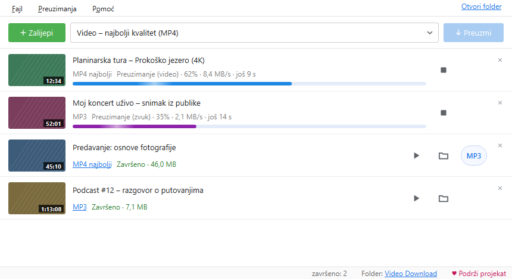

Video i zvuk na tvom računaru.
Jednim klikom.
Besplatan program za Windows: MP4 u punom kvalitetu ili MP3, direktno iz browsera ili iz kopiranog linka.
Program je namijenjen tvojim vlastitim videima, sadržaju uz dozvolu autora i sadržaju pod slobodnom licencom. Preuzimanjem prihvataš Uslove korištenja. Sadržaj zaštićen DRM-om se ne preuzima.

Sve što treba, ništa viška
Jednostavan prozor, a ispod njega sve što očekuješ od dobrog programa za preuzimanje.
MP4 do najboljeg kvaliteta
Najbolji, 1080p, 720p ili 480p. Slika i zvuk se sami spajaju u MP4 koji radi svuda.
Samo zvuk: MP3 ili M4A
Za predavanja, podcaste i muziku. Gotov MP4 se jednim dugmetom pretvara u MP3.
Dodatak za browser
Dugme „Preuzmi video koji se pušta" i desni klik na link ili video u Edge-u i Chrome-u. Kako se instalira
Kopiraj link i gotovo
Program sam primijeti kopiran link i doda ga u red. Radi i prevlačenje linka u prozor.
Red, plejliste, više odjednom
Cijele plejliste, do 4 preuzimanja istovremeno, automatski novi pokušaj kad pukne veza.
Isječak, titlovi, omot
Samo dio videa od–do, titlovi ugrađeni u MP4 i sličica kao omot fajla.
Svijetla i tamna tema
Ili kao Windows. Napredak se vidi i na dugmetu u traci zadataka, a na kraju stiže obavještenje.
Uvijek ažuran
Program sam provjerava nove verzije i ažurira dio koji čita sajtove, bez ponovne instalacije.
Kako radi
Od instalacije do prvog fajla za manje od minute.
Instaliraj
Pokreni instaler. Ne traži administratora i ne dodaje ništa drugo na računar.
Dodaj link
Kopiraj link, klikni „Zalijepi" ili preuzmi direktno iz browsera preko dodatka.
Izaberi i preuzmi
MP4 ili MP3, pa „Preuzmi". Fajl čeka u folderu Video Download.
Šta je novo
Isti spisak kao u programu (Pomoć → Šta je novo).
0.9.0 25.9.2026
- Tamna tema: Pomoć → Tema (svijetla, tamna ili kao Windows).
- Obavještenje u Windowsu kad se sva preuzimanja završe (Preuzimanja → Obavijesti me…).
- Napredak se vidi i na dugmetu programa u traci zadataka.
- Istorija: pretraga po naslovu, linku ili imenu fajla i izbor video, zvuk ili obrisani fajlovi.
- Ime fajla po izboru: Preuzimanja → Ime fajla (npr. „Izvođač - Naslov“).
0.8.0 25.9.2026
- Animirana traka napretka: glatko klizi, preko nje prelazi sjaj, plava je za video i ljubičasta za zvuk, dok se video i zvuk spajaju klizi lijevo-desno, a na kraju zazeleni.
0.7.9 24.9.2026
- Link koji nije video ni audio više nikad ne pravi karticu, ni preko „Zalijepi“ ni iz browsera; poruka je samo u statusnoj traci. Takva stara kartica se ne vraća pri pokretanju.
Program je besplatan
Bez reklama, bez praćenja i bez „premium" verzije. Ako ti koristi, možeš dobrovoljno podržati razvoj. Prilog ništa ne otključava: program je isti za sve.
♥ Podrži preko PayPal-a Skeniraj kamerom telefona
Skeniraj kamerom telefonaPomoć
Najčešća pitanja. Ako nešto ne radi: Pomoć → Sačuvaj izvještaj o problemu, pa nam ga pošalji.
Windows kaže „Windows je zaštitio računar". Šta sad?
Program još nema plaćeni digitalni potpis. Klikni „Više informacija" → „Ipak pokreni". SHA-256 zbir instalera je naveden uz svako izdanje na GitHub-u.
Video se odjednom ne preuzima.
Sajtovi često mijenjaju način rada. Pomoć → Ažuriraj čitač sajtova, pa pokušaj ponovo.
Zašto se prenos uživo ne preuzima?
Prenos uživo nema kraja, pa bi preuzimanje trajalo beskonačno. Preuzmi ga kad se završi i snimak bude objavljen.
Šta program šalje na internet?
Samo ono što je potrebno: link koji preuzimaš ide do tog sajta, a provjera ažuriranja ide na GitHub i PyPI. Nema naloga, statistike ni praćenja.